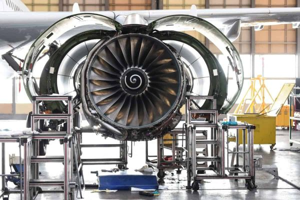
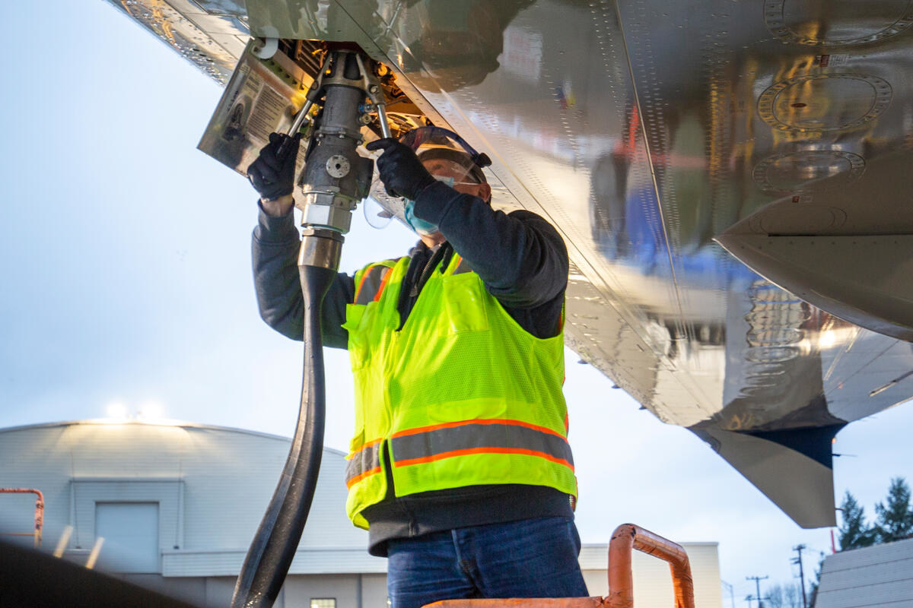
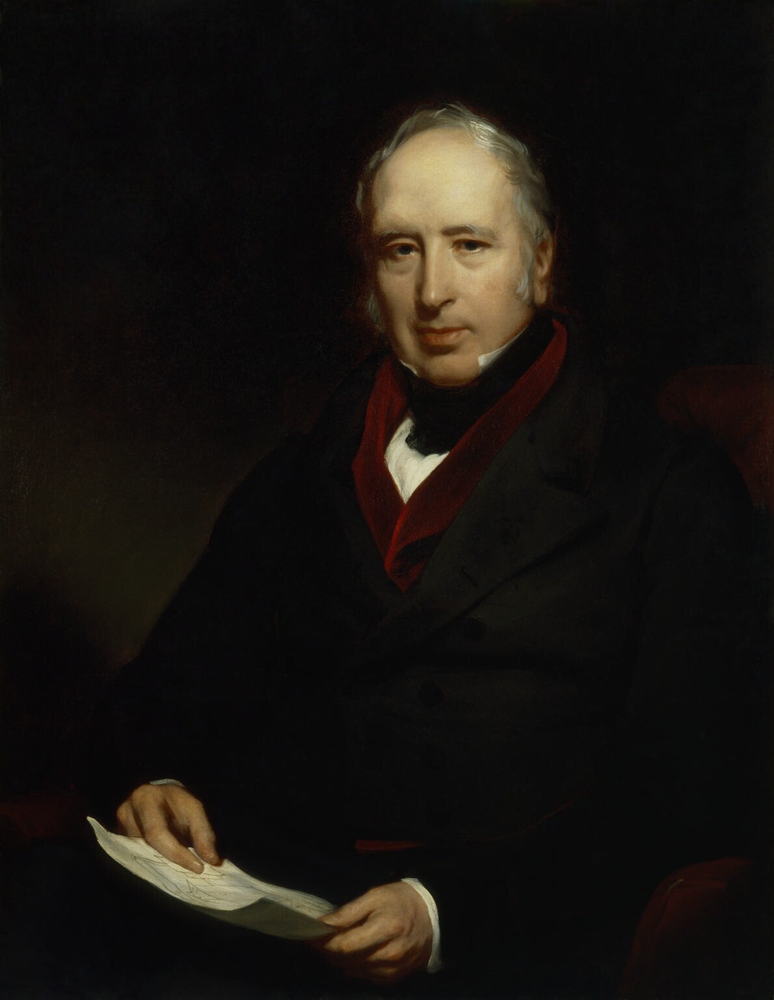
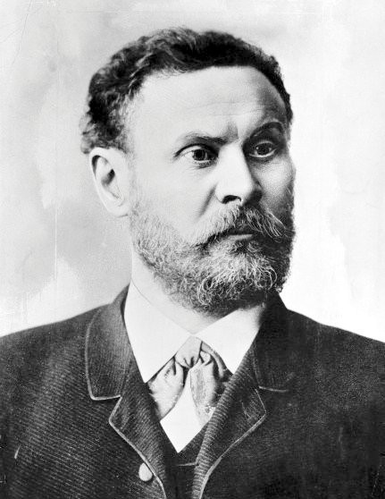
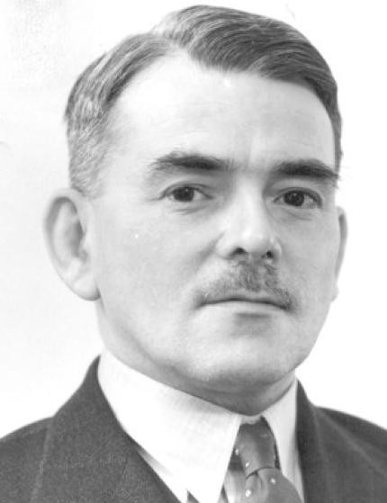

Aeronautical engineering is the main branch of aerospace engineering that focuses on the design, development, and maintenance of aircraft. It involves the application of mathematics, physics, and theory to not only solve problems in the field of aviation, but improve and renovate existing aircraft. Examples of aeronautical engineering in action include aircraft engines and flight mechanics.
Orville and Wilbur Wright made the first successful powered flight in 1903, marking the beginning of modern aviation, and setting the stage for a century of aerial innovation.
Charles Lindbergh completed the first solo nonstop flight across the Atlantic Ocean in 1927, by flying 33 hours from New York to Paris. This demonstrated the potential of long-distance air travel.
The launch of commercial jet travel began in 1952 with the de Havilland Comet, the first commercial jet airliner. With its easy accessibility and faster speeds, the Comet revolutioned air travel.
The introduction of Global Positioning System (GPS) technology transformed aviation navigation in the 1990s, providing pilots with precise location data and enhancing flight safety.
The primary objective is to redesign aircraft systems to eliminate carbon dioxide emissions.

The primary objective is to transition aviation to efficiently utilize other energy types.
The primary objective is to minimize the environmental footprint of aviation operations.
Sustainable aviation is the major goal of aeronautical engineering that focuses on reducing the environmental impact of air travel. This includes the development of more fuel-efficient aircraft in order to reduce emissions and remove the carbon footprint that aviation has on the environment. Aeronautical engineers work around the clock to develop new technologies and materials to help achieve this goal.


